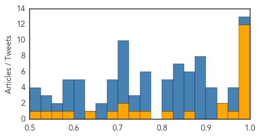
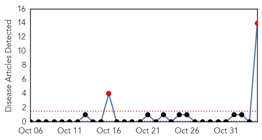
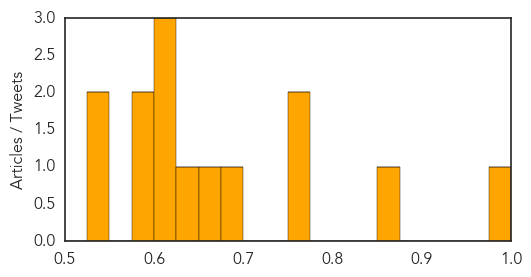

Ebola
30-Day Web Trend
4 alerts, 1 warnings

30-Day Twitter Trend
20 alerts, 0 warnings

Article Locations

Article Confidences
Top Articles:
- 0.999
- Nurse who joined fight against Ebola, news, Health News, AsiaOne YourHealth
- 0.999
- Dr. Tom Frieden on Ebola: Protecting the world from the next pandemic
- 0.999
- Sierra Leone on the doorstep of being Ebola-free, CDC downgrades travel advisory
- 0.998
- Sierra Leone health officials and WHO prepare for post-Ebola Sierra Leone
- 0.998
- New study finds how African immigrants stigmatized during recent Ebola crisis
- 0.997
- Australian Department of Foreign Affairs and Trade
- 0.989
- Health Ministry, WHO and DFID Concludes Assessment Tour on Post Ebola Preparedness in Six districts
- 0.988
- Australian Department of Foreign Affairs and Trade
- 0.986
- 5,893 Suspected Ebola Cases Declared Negative
- 0.983
- Ebola Survivor, Ada Igonoh Welcomes Baby Girl
- 0.980
- Baby joy for Nigerian Ebola survivor
- 0.978
- Australian Department of Foreign Affairs and Trade
- 0.964
- WEST AFRICA: Post-Ebola Women's Groups Need Funding
- 0.933
- Life In Sierra Leone After Ebola
- 0.931
- Health Policy Advisor to the Chief Medical Officer
- 0.853
- Malaria reservoir, Ebola challenges and counterfeit drugs: the ASTMH 64th annual meeting
- 0.824
- Crusaders for Peace Launches ECAP 2 in Cape Mount
- 0.766
- Strengthening Diplomatic Ties: Envoy takes Sierra Leone – Pakistan Relations to another Level
- 0.741
- National thanksgiving service dedicated to Ebola
- 0.724
- Chicken Soup Is Not Enough: Keep your workplace safe – from disease and liability – when employees get sick
- 0.722
- The Urban Legend
- 0.693
- Rebuilding lives in Sierra Leone — SOS Children
- 0.650
- Australian Department of Foreign Affairs and Trade
- 0.587
- West and Central Africa Region Weekly Regional Humanitarian Snapshot (27 October - 02 November 2015) - Cameroon
- 0.567
- I will fight Ebola until the last day says Rtd. Brig. Bio in Kenema
- 0.531
- Foreign troops helped defeat Ebola outbreak
- 0.519
- What’s killing the children of Freetown? Because it’s not Ebola. - Sierra Leone
Top Tweets:
- 0.997
- EBOLA KILLS CHILD EBOLA CONFIRMED https://t.co/lBcSz0wcGP Ebola BREAKING
- 0.997
- BreakingNews EBOLA KILLS CHILD EBOLA CONFIRMED https://t.co/lBcSz0wcGP Ebola BREAKING
- 0.996
- I Had Ebola - https://t.co/DdGnqp0uUJ ebola
- 0.996
- EBOLA KILLS CHILD TODAY EBOLA CONFIRMED DEATH MEDIA NOT REPORTING RETWEET EVERYONE! https://t.co/lBcSz0wcGP Ebola
- 0.996
- EBOLA KILLS CHILD TODAY EBOLA CONFIRMED https://t.co/lBcSz0wcGP Ebola BREAKING BreakingNews
- 0.995
- Ebola - https://t.co/JbfCvW2QRT ebola
- 0.993
- BreakingNews EBOLA CONFIRMED DEATH https://t.co/lBcSz0wcGP Ebola BREAKING
- 0.993
- BreakingNews EBOLA CONFIRMED DEATH https://t.co/lBcSz0wcGP Ebola BREAKING
- 0.993
- EBOLA!!!! KILLS CHILD TODAY CONFIRMED EBOLA! DEATH! https://t.co/lBcSz0wcGP Ebola BREAKING
- 0.992
- Sierra Leone health officials and WHO prepare for post-Ebola Sierra Leone - https://t.co/6ZvRa5moy7 ebola
- 0.992
- EBOLA!!!! CHILD DIES TODAY CONFIRMED EBOLA! DEATH! https://t.co/lBcSz0wcGP Ebola BREAKING
- 0.992
- EBOLA!!!! CHILD DIES TODAY CONFIRMED EBOLA! DEATH! https://t.co/lBcSz0wcGP Ebola BREAKING BreakingNews
- 0.992
- EBOLA!!!! CHILD DIES TODAY CONFIRMED EBOLA! DEATH! https://t.co/lBcSz0wcGP Ebola BREAKING BreakingNews
- 0.992
- EBOLA!!!! CHILD DIES TODAY CONFIRMED EBOLA! DEATH! https://t.co/lBcSz0wcGP Ebola BREAKING BreakingNews
- 0.992
- EBOLA KILLS ANOTHER CHILD DIES TODAY FROM EBOLA CONFIRMED https://t.co/lBcSz0wcGP Ebola BREAKING BreakingNews
- 0.992
- EBOLA!!!! CHILD DIES TODAY CONFIRMED EBOLA! DEATH! https://t.co/lBcSz0wcGP Ebola BREAKING BreakingNews
- 0.991
- EBOLA!!!! CHILD DIES TODAY CONFIRMED EBOLA! https://t.co/lBcSz0wcGP Ebola BREAKING
- 0.990
- A model of the Ebola epidemics in West Africa incorporating age of infection - https://t.co/PLxsQyCp50 ebola
- 0.989
- Ebola control with ring vaccination - https://t.co/ADoGvXryOw ebola
- 0.987
- 'Ebola-free' Future for Sierra Leone - https://t.co/X8k7hUtZiL ebola
- 0.984
- Ebola survivors team with researchers to fight deadly virus - https://t.co/UgZ3rcj1f8 ebola
- 0.982
- EBOLA KILLS CHILD TODAY EBOLA DEATH CONFIRMED https://t.co/lBcSz0wcGP
- 0.982
- EBOLA KILLS CHILD TODAY EBOLA DEATH CONFIRMED https://t.co/lBcSz0wcGP
- 0.979
- Ebola outbreak in West Africa - @Oxfam's response https://t.co/oKuh3GdsD4
- 0.977
- EBOLA KILLS CHILD TODAY EBOLA CONFIRMED DEATH MEDIA NOT REPORTING !!!!! https://t.co/lBcSz0wcGP Hannity foxnews
- 0.976
- 5893 Suspected Ebola Cases Declared Negative - Liberian Daily Observer https://t.co/K9t9Z6BWCG ebola EVD
- 0.975
- Researchers Use Mutated Gene To "Handicap" Ebola Virus Growth - https://t.co/lj1saLUUMQ ebola
- 0.975
- High Consequence Infectious Disease Response: Ebola and Other Pathogens, a Multi-Disciplinary ... - https://t.co/peXIR7yBvS ebola
- 0.974
- Ebola survivors' needs go beyond medical treatment - https://t.co/CiyPPiAadI ebola
- 0.974
- EBOLA AGAIN PATIENT DIES FROM EBOLA TODAY!!!!!!!! https://t.co/lBcSz0wcGP
- 0.974
- EBOLA AGAIN PATIENT DIES FROM EBOLA TODAY!!!!!!!! https://t.co/lBcSz0wcGP
- 0.974
- EBOLA AGAIN PATIENT DIES FROM EBOLA TODAY!!!!!!!! https://t.co/lBcSz0wcGP
- 0.974
- EBOLA AGAIN PATIENT DIES FROM EBOLA TODAY!!!!!!!! https://t.co/lBcSz0wcGP
- 0.974
- EBOLA AGAIN PATIENT DIES FROM EBOLA TODAY!!!!!!!! https://t.co/lBcSz0wcGP
- 0.974
- EBOLA AGAIN PATIENT DIES FROM EBOLA TODAY!!!!!!!! https://t.co/lBcSz0wcGP
- 0.974
- EBOLA AGAIN PATIENT DIES FROM EBOLA TODAY!!!!!!!! https://t.co/lBcSz0wcGP
- 0.973
- Nigeria Ebola Success Story Continues - https://t.co/uZLk6ai4WY ebola
- 0.971
- EBOLA HERE!!!! PATIENT DIES FROM EBOLA TODAY!!!!!!!! https://t.co/lBcSz0wcGP
- 0.971
- EBOLA HERE!!!! PATIENT DIES FROM EBOLA TODAY!!!!!!!! https://t.co/lBcSz0wcGP
- 0.971
- EBOLA HERE!!!! PATIENT DIES FROM EBOLA TODAY!!!!!!!! https://t.co/lBcSz0wcGP
- 0.971
- EBOLA HERE!!!! PATIENT DIES FROM EBOLA TODAY!!!!!!!! https://t.co/lBcSz0wcGP
- 0.971
- EBOLA HERE!!!! PATIENT DIES FROM EBOLA TODAY!!!!!!!! https://t.co/lBcSz0wcGP
- 0.971
- EBOLA HERE!!!! PATIENT DIES FROM EBOLA TODAY!!!!!!!! https://t.co/lBcSz0wcGP
- 0.971
- EBOLA HERE!!!! PATIENT DIES FROM EBOLA TODAY!!!!!!!! https://t.co/lBcSz0wcGP
- 0.971
- EBOLA HERE!!!! PATIENT DIES FROM EBOLA TODAY!!!!!!!! https://t.co/lBcSz0wcGP
- 0.971
- EBOLA HERE!!!! PATIENT DIES FROM EBOLA TODAY!!!!!!!! https://t.co/lBcSz0wcGP
- 0.971
- EBOLA HERE!!!! PATIENT DIES FROM EBOLA TODAY!!!!!!!! https://t.co/lBcSz0wcGP
- 0.971
- EBOLA HERE!!!! PATIENT DIES FROM EBOLA TODAY!!!!!!!! https://t.co/lBcSz0wcGP
- 0.971
- EBOLA HERE!!!! PATIENT DIES FROM EBOLA TODAY!!!!!!!! https://t.co/lBcSz0wcGP
- 0.971
- EBOLA HERE!!!! PATIENT DIES FROM EBOLA TODAY!!!!!!!! https://t.co/lBcSz0wcGP …
Showing top 50 tweets...
Yellow Fever
30-Day Web Trend
2 alerts, 0 warnings

30-Day Twitter Trend
0 alerts, 0 warnings

Article Locations

Article Confidences
Top Articles:
- 0.993
- Haemorrhagic Fever: UN assessment response team arrives in Sudan
- 0.872
- Australian Department of Foreign Affairs and Trade
- 0.770
- Australian Department of Foreign Affairs and Trade
- 0.758
- Australian Department of Foreign Affairs and Trade
- 0.697
- Australian Department of Foreign Affairs and Trade
- 0.675
- Australian Department of Foreign Affairs and Trade
- 0.635
- Australian Department of Foreign Affairs and Trade
- 0.624
- Australian Department of Foreign Affairs and Trade
- 0.623
- Australian Department of Foreign Affairs and Trade
- 0.615
- Australian Department of Foreign Affairs and Trade
- 0.587
- Australian Department of Foreign Affairs and Trade
- 0.576
- Australian Department of Foreign Affairs and Trade
- 0.544
- Australian Department of Foreign Affairs and Trade
- 0.528
- Australian Department of Foreign Affairs and Trade
Top Tweets:
-
No tweets found for Nov 04, 2015